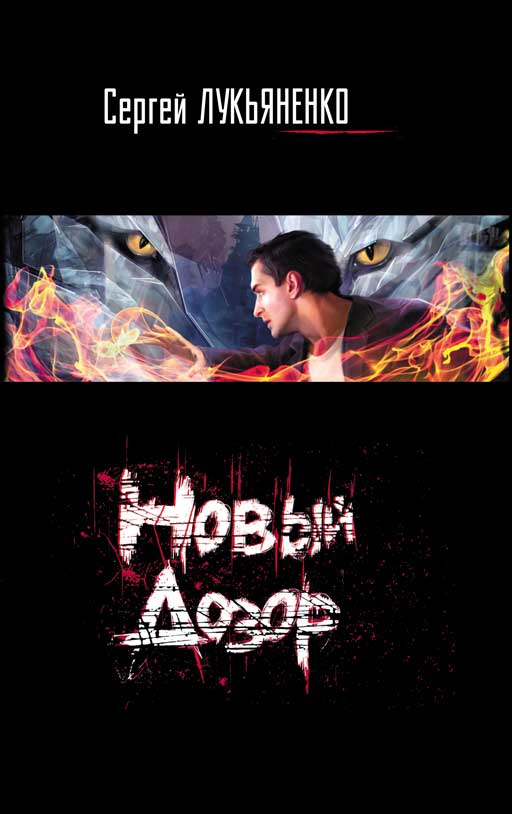

– По утреннему происшествию ситуацию доложит Городецкий, – не отрывая взгляда от бумаг, сказал Гесер.
Я встал. Поймал сочувственный взгляд Семена. Начал:
– Два часа назад я провожал на рейс в Нью-Йорк господина Уорнса. После того как наш коллега прошел регистрацию и стал покупать водку в дьюти-фри…
– Вы что, прошли с ним за паспортный контроль, Городецкий? – осведомился Гесер, не поднимая глаз.
– Ну да.
– Зачем?
– Убедиться, что с ним все в порядке. – Я откашлялся. – Ну и купить кое-что себе в дьюти-фри…
– Что именно?
– Пару бутылок виски.
– Какого… – Гесер оторвал взгляд от стола.
– Шотландского. Односолодового. «Гленливет» двенадцатилетний и «Гленморанж» восемнадцатилетний… но это на подарок, я лично считаю, что пить восемнадцатилетний вискарь – пижонство…
– Какого хрена! – рявкнул Гесер. – Что за… мелкие корыстные акции…
– Вы извините, Борис Игнатьевич, – сказал я. – Но господин Уорнс пьет как лошадь. И предпочитает не «Белую лошадь», а приличные сингл молты. У меня бар опустел. А завтра приедет еще какой-нибудь гость – и вы мне поручите его принимать. А моя зарплата не позволяет покупать алкоголь в «Азбуке вкуса».
– Дальше, – ледяным голосом сказал Гесер.
– Дальше я сел в баре выпить кружку пива.
– Вы давно пьете пиво по утрам, Городецкий?
– Четвертый день. С момента приезда Уорнса.
Семен хихикнул. Гесер привстал и оглядел всех сидящих за столом – десять Иных не ниже третьего уровня, или, как говорили ветераны, «ранга».
– Особенности приема гостей мы обсудим позже. Итак, вы похмелялись пивком. Что дальше?
– Вошла женщина с ребенком. Толстый мальчишка лет десяти, вопил не переставая. Просил мать не лететь, говорил, что самолет разобьется. Ну… разумеется, я просканировал ауру. Мальчишка оказался неинициированным Иным высокого уровня, первого-второго как минимум. Судя по всему – предсказатель. Возможно, даже пророк.
В зале слегка зашевелились.
– Откуда такие смелые выводы? – спросил Гесер.
– Цвет. Интенсивность. Мерцание… – Я напрягся, посылая в пространство то, что видел. Все сидящие уставились в пустую точку над столом. Разумеется, никакого реального изображения я не создавал, но сознание всегда услужливо подыщет для картинки какую-нибудь точку в воздухе.
– Допустим, – кивнул Гесер. – Но все-таки пророк…
– Предсказатель, как правило, лишен возможности увидеть собственное будущее. А мальчик испугался своей смерти. Это уже довод в пользу пророка… – негромко сказала Ольга.
Гесер неохотно кивнул.
– Я узнал, есть ли у нас право на вмешательство первого-второго уровня – спасти весь самолет. Такого права, увы, не было. Тогда я взял право на пятый уровень и снял с рейса мальчика и его мать.
– Разумно. – Гесер вроде бы чуть успокоился. – Разумно. Мальчик на контроле?
Я пожал плечами. Семен деликатно кашлянул и вставил:
– Работаем, Борис Игнатьевич.
Гесер кивнул и снова посмотрел на меня:
– Что-то еще?
Я поколебался.
– Он сделал еще одно предсказание. Мне лично.
– Иному Высшего уровня? – уточнил зачем-то Гесер.
– Пророк! – почти весело произнесла Ольга. – И впрямь пророк!
Я кивнул.
– Можешь его озвучить, Антон? – уже совершенно мирно и дружелюбно спросил Гесер.
– Легко. «Вы Антон Городецкий, Высший Светлый маг. Вы отец Надьки. Вы… вы нас… вы нас всех…»
– Что дальше?
– А дальше его прервали.
Гесер что-то проворчал и стал постукивать пальцами по столу. Я ждал. И все остальные тоже ждали.
– Антон, я не хотел бы показаться невежливым… но вы уверены, что решили выпить пива по собственной воле?
Я растерялся. Даже не обиделся – а растерялся. Спросить Иного, не попал ли он под чье-то внушение, – довольно серьезное дело. Словно… ну, словно для одного человека поинтересоваться успешностью интимной жизни другого. Между близкими друзьями, конечно, подобный вопрос возможен. Но между начальником и подчиненным… да еще и в присутствии других сотрудников… Нет, ну если неопытный Иной совершает какой-то неадекватный поступок… тут вопрос «Ты своей головой думал?» уместен. Но и то как риторический. А уж обратиться с таким вопросом к Высшему Иному…
– Борис Игнатьевич, – сказал я, с ожесточением сдирая с себя все слои ментальной защиты. – Наверное, я чем-то дал основания вашим словам. Не пойму, правда, чем именно. На мой взгляд – да, я действовал исключительно по собственной воле. Но если вы сомневаетесь, то просканируйте меня, я не против.
Конечно же, это тоже была риторическая фраза. Абсолютно. Так человек, оказавшийся под каким-нибудь нелепым подозрением – к примеру, что он, будучи в гостях, украл со стола серебряные ложечки, – предлагает проверить его карманы…
– Спасибо, Антон, я воспользуюсь твоим предложением, – ответил Гесер вставая.
В следующее мгновение я отключился.
А потом открыл глаза.
В промежутке, конечно, было какое-то время – минут пять, десять. Вот только я его не запомнил. Я лежал на диванчике, который стоит в кабинете Гесера и который все иронично называют «плацдарм для мозгового штурма». Мою голову придерживала Ольга – и она была очень, очень зла. Напротив меня сидел на стуле Гесер – и он был очень, очень смущен. Больше никого в кабинете не было.
– Ну и как… тварь ли я дрожащая, или право имею? – спросил я.
– Антон, я нижайше приношу свои извинения, – сказал Гесер.
– Перед присутствующими он уже извинился, – добавила Ольга. – Антон, прости старого дурака.
Я сел и потер виски. Голова не то чтобы болела – казалась удивительно пустой и звенела.
– Кто я? Где я? Кто вы такие, я вас не знаю! – пробормотал я.
– Антон, я прошу принять мои извинения… – повторил Гесер.
– Шеф, с чего вы взяли, что я под влиянием? – спросил я.
– Тебе не кажется странным, что, проводив гостя, ты внезапно присел выпить пива в дрянной и дорогой кафешке, хотя знал, что тебе предстоит садиться за руль?
– Кажется. Но так уж тот день сложился.
– А что именно в этот момент, когда ты внезапно решил задержаться в аэропорту, у тебя на глазах устроил истерику мальчик-предсказатель?
– Жизнь вся состоит из совпадений, – философски сказал я.
– Ну а то, что самолет благополучно долетел до Барселоны?
Вот тут он меня уел.
– Как – долетел?
– Обычно. Шумя моторами и покачивая крыльями. Долетел, выгрузил людей и час назад вылетел обратно.
Я помотал головой.
– Борис Игнатьевич… Я, конечно, не предсказатель. Но уж когда прицельно начинаю проверять вероятность того или иного события… Мальчик завопил о катастрофе. Я глянул его ауру – Иной, неинициированный, в спонтанном выплеске Силы. Я начал проглядывать линии реальности – самолет падал. С вероятностью в девяносто восемь процентов. Может… ну, нет же абсолютно точных предсказаний… Выплыли те два процента?
– Допустим. А как еще можешь интерпретировать произошедшее?
– Провокация, – неохотно сказал я. – Мальчика накачали Силой, повесили фальшивую ауру. Прием известный, вы сами… Хм… Ну, потом мальчишка истерит, я слышу его вопли, начинаю просчитывать вероятности… допустим, они тоже искажены.
– Какова цель? – спросил Гесер.
– Заставить нас истратить право на вмешательство первого уровня впустую. Самолет и не думал падать, пацан интереса не представляет. А мы как идиоты выстрелили впустую.
Гесер назидательно поднял палец.
– Но у нас все равно не было права на вмешательство!
– Было, – буркнул Гесер. – Было и есть. Но зарезервировано за мной лично. Если бы ты обратился ко мне напрямую… я бы разрешил вмешаться.
– Во как… – сказал я. – Ну тогда… тогда и впрямь похоже. А что пацан?
– Пророк… – неохотно сказал Гесер. – Большой силы. И на тебе никаких следов воздействия. Так что ты прав, пожалуй.
– Но самолет не упал, – негромко сказала Ольга.
Мы замолчали.
– У пророков не бывает ошибок. Мальчик – пророк, поскольку выдавал предсказания о своей судьбе и о судьбе Высшего Иного. Но самолет не упал. Ты в события не вмешивался… – негромко произнес Гесер.
И тут до меня дошло.
– А вы ведь проверяли не то, под влиянием я был или нет, – сказал я. – Вы проверяли, не спас ли я самолет без разрешения.
– И это тоже. – Гесер даже не смутился. – Но озвучивать такую причину при коллегах не хотел.
– Спасибо огромное. – Я поднялся и пошел к двери. Гесер дождался, пока я открою дверь, и только после этого сказал:
– Должен сказать, Антон, я очень рад за тебя. Рад и горд.
– Чему же именно?
– Тому, что ты не стал вмешиваться без разрешения. И даже не придумывал никаких человеческих глупостей вроде телефонных звонков о бомбе в самолете…
Я вышел и закрыл за собой дверь.
Мне хотелось заорать или стукнуть кулаком по стене.
Но я держался. Я был невозмутим и холоден.
Я ведь действительно не придумывал «никаких человеческих глупостей»! Мне это даже в голову не пришло. Я убедился, что у нас нет законной возможности спасти двести человек, – и спасал одного Иного и его мать.
Уроки пошли мне на пользу. Я вел себя как правильный Высший Иной.
И от этого на душе было мерзко.
– Антон!
|
Реактивный пассажирский самолет летел на высоте 14.000 метров, намного выше громоздившихся внизу кучевых облаков. Даже на этой высоте на его пути время от времени попадались участки с повышенной турбулентностью - напоминание о буре, которая бушевала под облаками. В салоне находился всего один пассажир - мужчина плотного сложения, лет под пятьдесят, целиком погруженный в какие-то бумаги. На секунду Беникоф оторвался от работы, чтобы прихлебнуть пива. Он увидел, что на его факсе мигает красная лампочка: все новые и новые сообщения шли по телефонному каналу и записывались в память аппарата. Он вызвал их на экран и просматривал одно за другим, пока не смог ясно - слишком ясно! - представить себе подлинные масштабы катастрофы в лабораториях компании \"Мегалоуб\". Лампочка продолжала мигать - сообщения шли и шли, но теперь они его уже больше не интересовали. Это была какая-то жуткая, невероятная фантастика - и он ничего не мог сделать, пока не прибудет в Калифорнию. Поэтому он решил вздремнуть. Любой другой на его месте лишился бы сна на всю ночь и сидел бы, изнывая от тревоги и перебирая в уме возможные варианты действий. Но Альфред Дж.Беникоф был не из таких. Он всегда отличался невероятной практичностью. Тревожиться сейчас - значит попусту терять время. Больше того, нельзя упускать возможность выспаться: там, на месте, времени на это может не остаться. Он поправил подушку под головой, опустил спинку кресла, прикрыл глаза и сразу же заснул. На его загорелом лице появилось выражение спокойствия, нахмуренный лоб разгладился - теперь он выглядел даже моложе своих пятидесяти: высокий, крепкий человек с едва намечающейся полнотой, от которой не помогала никакая диета. В студенческие годы, в Йэльском университете, он играл в футбол, в нападении, и с тех пор умудрился сохранить форму. Он был как будто создан для своей работы, при которой часто приходилось не высыпаться. |
Официально должность Беникофа называлась \"помощник специального уполномоченного АНОП\", однако это был скорее почетный титул, лишенный реального смысла, - в сущности, лишь прикрытие для его подлинной деятельности. На самом деле он был главным специалистом по расследованию всевозможных деликатных историй в области науки и подчинялся непосредственно президенту США. Беникофа привлекали к делу, когда с какой-нибудь исследовательской программой начинались нелады. Чтобы всегда быть готовым к самому худшему, он старался по возможности держаться в курсе всех разработок, какие только шли в стране. В \"Мегалоуб\" он наведывался так часто, как только мог: столь обширны и разнообразны были исследования, которые там велись. Однако это был отчасти только повод для его визитов. Больше всего его интересовали работы Брайана - он близко познакомился с молодым ученым, который ему очень нравился. Вот почему его так потряс этот налет. Он проснулся от воя выпускаемого шасси. Только начинало светать, и восходящее солнце бросало красные полосы света сквозь иллюминаторы, когда они заходили на посадку в аэропорту компании \"Мегалоуб\". Беникоф поспешно вызвал на экран и просмотрел сообщения, которые пришли, пока он спал. Некоторые из них содержали уточнения предыдущих, но никакой действительно новой информации не было. У трапа его встретил Рохарт, изможденный и небритый: этой ночью ему крепко досталось. Беникоф с улыбкой пожал ему руку. - Ну и вид у тебя, Кайл. - А самочувствие еще хуже. Ты же знаешь, что у нас нет ни одной ниточки, что все материалы по проекту \"ИИ\" исчезли, что... - А как Брайан? - Жив - больше мне ничего неизвестно. Как только состояние стабилизировалось и его подключили к аппаратуре реанимации, медицинский вертолет доставил его в Сан-Диего. Операция шла всю ночь. - Пойдем выпьем кофе, и ты мне все расскажешь. Они прошли в столовую для руководящего персонала и налили себе черного мексиканского кофе. Рохарт сделал большой глоток и продолжал: - В больнице пришли в ужас, когда увидели, какие обширные у него повреждения. Они даже послали вертолет за главным хирургом - каким-то Снэрсбруком. - Это доктор Эрин Снэрсбрук. В последний раз, когда мы виделись, она работала в институте Скриппса, в Ла-Хойе. Ты не сможешь передать ей, чтобы она связалась со мной, когда кончится операция? Рохарт вынул из кармана радиофон и дал поручение своей секретарше. - Боюсь, что я о ней никогда не слыхал. - А надо бы. Она лауреат премии Ласкера по медицине в области нейрофизиологии и, вполне возможно, лучший нейрохирург в стране. А если ты поднимешь архивы, то увидишь, что Брайан одно время работал вместе с ней по своей тематике. Я не знаю подробностей, но только что увидел это в последнем докладе, который ко мне поступил. - Если она такой хороший хирург, то, макет быть... - Если кто-нибудь и способен спасти Брайана, так это она. По крайней мере, я очень на это надеюсь. Брайан - очевидец всего, что здесь случилось. Если он выживет, если придет в себя, он может оказаться единственной нашей путеводной нитью. Потому что до сих пор нет ни малейшего намека на то, как был устроен этот невероятный налет. - Мы знаем часть того, что произошло. Я не хотел передавать тебе подробности по факсу, линия для этого недостаточно защищена. - Рохарт протянул ему фотографию. - Вот кое-какие остатки - вероятно, это был компьютер. Сожжен термитом. - Где это нашли? - Было закопано в землю позади корпуса охраны. Инженеры говорят, что компьютер был подключен к системе тревожной сигнализации. Нет никакого сомнения, что это устройство было запрограммировано на то, чтобы сообщать на центральный пост охраны ложную информацию. Беникоф мрачно кивнул: - Чистая работа. Операторы на центральном посту знают только то, что показывают их экраны и циферблаты. Снаружи может наступить конец света, но пока на экране видны луна и звезды, а по звуковому каналу транслируется лай койотов, дежурный ничего не узнает. Но как же патрули, собаки? - Ни малейшего намека. Исчезли. - Как и все оборудование вместе с людьми - кроме Брайана, который остался в лаборатории? Тут у вас были грубо нарушены все правила безопасности. В этом мы тоже еще разберемся, но не сейчас. Конюшня настежь, а ваш ИИ увели... Зажужжал телефон, и он взял трубку. - Беникоф слушает. Говорите. - Некоторое время он молча слушал. - Ладно. Перезванивайте туда каждые двадцать минут или около того. Нужно, чтобы она обязательно переговорила со мной прежде, чем оттуда уедет. Это неотложное дело. - Он сунул аппарат в карман. - Доктор Снэрсбрук все еще в операционной. Я хочу, чтобы ты сейчас провел меня в лабораторию. Мне надо увидеть все своими глазами. Но сначала расскажи об этой скупке акций в Японии. Какое отношение она имеет к похищению? - Время совпадает. Скупка могла быть устроена для того, чтобы задержать Джей-Джея у себя до тех пор, пока лаборатории не закроются на ночь. |
||||||
|
- Мало вероятно, но я проверю. Идем туда. Но прежде всего я хочу точно выяснить, кто сейчас тут главный. Рохарт удивленно поднял брови: - Боюсь, я не понимаю... - А ты подумай. Ваш председатель, ваш ведущий ученый и ваш начальник службы безопасности исчезли. Либо перешли на сторону противника - кто бы он ни был, - либо их нет в живых. - Уж не думаешь ли ты... - Думаю, да и тебе советую подумать. Ваша компания и все ее исследовательские разработки серьезно скомпрометированы. Мы знаем, что похищен искусственный интеллект - а что еще? Я намерен предпринять тщательную проверку всех секретных дел и бумаг. Но прежде я хочу снова задать вопрос - кто сейчас у вас главный? - Боюсь, что мне спихнуть не на кого, - ответил Рохарт без малейшего удовольствия. - Как директор-распорядитель я, видимо, остался старшим по должности. - Верно. Так вот, считаешь ли ты, что способен обеспечить продолжение деятельности компании, в одиночку заниматься всеми делами и в то же время вести тщательное расследование, какое здесь необходимо? Прежде чем ответить, Рохарт прихлебнул кофе и вгляделся в лицо Беникофа, пытаясь понять, куда тот клонит, но прочитать на нем ничего не смог. - Ты хочешь, чтобы я сам это сказал, да? Что я могу обеспечить работу \"Мегалоуб\", но у меня нет опыта в таких расследованиях, какое здесь нужно, и оно мне не по зубам? - Я не хочу, чтобы ты сказал что-нибудь такое, чего сам не думаешь. - Голос Беникофа был ровен и бесстрастен. Рохарт угрюмо усмехнулся: - Вас понял. Ты, конечно, сукин сын, но ты прав. Ты согласен взять расследование на себя? Считай, что это официальная просьба. - Хорошо. Я просто хотел, чтобы была полная ясность, кто чем занимается. - Значит, берешься - договорились? Тогда что мне теперь делать? - Руководить компанией. И точка. А я займусь всем остальным. Рохарт тяжело вздохнул и откинулся на спинку стула. - Я рад, что ты здесь. Нет, правда. - Ладно. Теперь пошли в лабораторию. Дверь в лабораторный корпус теперь была закрыта, и ее охранял рослый, угрюмый человек. На нем был пиджак, хотя утро выдалось теплое и сухое. - Документы, - произнес он, неподвижно стоя перед дверью. Бегло взглянув на удостоверение Рохарта, он подозрительно уставился на Беникофа, когда тот полез в карман за своим. Увидев голографическую фотографию и прочитав, кто такой Беникоф, он неохотно буркнул: - Проходите, сэр. Вторая дверь по коридору. Он ждет вас. Одного. - Кто? - Это все, что я уполномочен вам сообщить, сэр, - невозмутимо ответил охранник. - Да я тебе и не нужен, - сказал Рохарт. - А у меня прорва дел в конторе. - Хорошо. Беникоф быстро прошел к указанной двери, постучал, потом открыл ее и вошел. - Имен не называть, пока дверь открыта. Заходите и закройте за собой дверь, - сказал человек, сидевший за столом. Беникоф повиновался, потом снова повернулся к столу и с трудом преодолел невольное желание вытянуться по стойке \"смирно\". |
|
||||||
|
- Знаю, Бен. - Генерал позволил себе на секунду расслабиться и стал почти похож на человека. На очень усталого человека. Потом на лице у него снова появилось официальное выражение. - Можете идти. - Могу я спросить, в каком качестве вы принимаете участие в этой истории? - Нет. - Генералу ничего не стоило восстановить против себя кого угодно. - Сейчас же явитесь к агенту Дэйву Мэньясу. Он руководит группой расследования из ФБР. |
|||||||
Обернувшись, я увидел поспешно догонявшего меня Семена. Выглядел тот слегка смущенным, как старый друг, ставший невольным свидетелем неловкой и некрасивой сцены. Но мы были дружны достаточно долго и крепко, чтобы Семену не пришлось изображать, будто он задержался случайно.
– Думал, дольше ждать придется, – пояснил Семен. – Ну учудил шеф, учудил…
– Он прав… – неохотно признал я. – Ситуация и впрямь сложилась странная.
– Мне поручили поговорить с мальчишкой, инициировать, обосновать родителям его занятия в нашей школе… в общем – стандартная процедура. Хочешь, поедем?
– А что, уже нашли? – заинтересовался я. – Я только имена считал, дальше возиться не стал…
– Конечно, нашли! Двадцать первый век на дворе, Антоха! Позвонили в наш информационный центр, задали вопрос – кто не явился на рейс такой-то в Барселону. Через минуту Толик перезвонил, выдали имена и адреса. Иннокентий Григорьевич Толков, десять с половиной лет. Живет с мамой… ну, ты же знаешь, что в неполных семьях Иные встречаются статистически чаще.
– Социальная депривация способствует… – буркнул я.
– А я слышал версию, что папаши подсознательно чувствуют, что ребенок – Иной, и уходят из семьи, – сказал Семен. – Боятся, короче… Живут Толковы рядом, на «Водном стадионе»… смотаемся?
– Нет, Семен, не поеду, – покачал я головой. – Ты и сам прекрасно справишься.
Семен вопросительно смотрел на меня.
– Да все в порядке! – твердо сказал я. – Не бойся, я не бьюсь в истерике, не ухожу в запой и не вынашиваю планов покинуть Дозор. Я в аэропорт съезжу, поброжу там. Как-то все неправильно, понимаешь? Мальчик-пророк изрек туманные пророчества, самолет, который должен был упасть, не разбился… все не так!
– Гесер уже послал в Шереметьево инспекцию, – сообщил Семен.
Какой-то у него был голос ехидный…
– Кого он послал?
– Ласа.
– Понятно, – кивнул я, останавливаясь у лифтов и нажимая вызов. – То есть ничего интересного Гесер не ждет.
Лас был нетипичным Иным. Начать с того, что никаких способностей Иного у него не было и не должно было появиться. Но несколько лет назад его угораздило попасть под заклинание древней магической книги «Фуаран». Вампир Костя, бывший когда-то моим соседом и даже приятелем, продемонстрировал на Ласе, что с помощью книги способен превращать людей в Иных…
Самым странным я считал даже не то, что Лас превратился в Иного, а то, что он превратился в Светлого Иного. Злодеем он не был, но вот чувство юмора имел специфическое… да и его взгляды на жизнь соответствовали скорее Темному. Работа в Ночном Дозоре, к которой он относился, похоже, как к очередной шутке, его особо не изменила.
Но Иным он был слабым. Седьмого, самого начального уровня, с неопределенными перспективами дорасти до пятого-шестого (впрочем, Лас к этому не рвался).
– А вот не скажи, – не согласился со мной Семен. – Гесер не ждет ничего интересного в магическом плане. Ты ведь там был, ничего не заметил. Ты и сам Высший…
Я поморщился.
– Высший, Высший, – дружелюбно сказал Семен. – Опыта у тебя мало, но способности-то есть. Так что копать в этом направлении бесполезно. А вот Лас – он по-другому на ситуацию посмотрит. Практически с точки зрения человека. Голова у него работает довольно парадоксально… вдруг что-то заметит?
– Тогда точно нам следует съездить вдвоем, – сказал я. – А ты дерзай, инициируй пророка.
– Восстань, и виждь, и внемли… – Семен первым вошел в наконец-то появившийся лифт, вздохнул: – Ох, не люблю я пророков и предсказателей! Как ляпнут что-нибудь в твой адрес – и ходишь потом как дурак, размышляешь, что же имелось в виду. Порой таких страхов себе напридумываешь, а на деле полная ерунда, тьфу, внимания не стоит!
– Спасибо, – сказал я Семену. – Да не беспокойся ты… я спокойно к этому отношусь. Подумаешь, пророк!
– Помню, был у нас в Петрограде один предсказатель, – с готовностью подхватил Семен. – И вот в году одна тыща девятьсот шестнадцатом, под Новый год, спрашиваем его о перспективах. А он нам и выдает…
Ласа я успел перехватить во дворе, он как раз садился в свою чисто вымытую «мазду». При моем появлении он откровенно обрадовался.
– Антон, а ты не сильно занят?
– Ну…
– Не смотаешься со мной в «Шарик»? Борис Игнатьевич велел по твоим следам пройти, странности всякие поискать. Может, присоединишься?
– Что с тобой поделать, – вздохнул я, забираясь на правое сиденье. – Съезжу. Будешь должен, сам понимаешь.
– О чем речь, – обрадовался Лас, заводя машину. – А то у меня со временем плохо, и так сегодня планы пришлось менять.
– Что за планы? – спросил я, пока мы выезжали со стоянки.
– Да это… – Лас слегка смутился. – Я сегодня креститься собирался.
– Чего? – Мне показалось, что я ослышался.
– Креститься, – повторил Лас, глядя на дорогу. – Ничего? Нам ведь можно креститься?
– Кому «нам»? – уточнил я на всякий случай.
– Иным!
– Можно, конечно, – ответил я. – Это как бы… дела духовные. Магия магией, а вера…
Ласа будто прорвало:
– Вот и я подумал – черт его знает, как там посмотрят на то, что магией занимаюсь… я вообще-то агностик всегда был, ну точнее – экуменист широкого профиля, а тут как-то подумал… лучше уж креститься, для гарантии.
– В «Симпсонах» один персонаж был, так он на всякий случай еще соблюдал день субботний и совершал намаз, – не удержался я.
– Не кощунствуй, – сказал Лас строго. – Я же серьезно… Церковь вот специально нашел в Подмосковье. В Москве, говорят, все попы коррумпированные. А в провинции – ближе к Богу. Вчера созвонился, поговорил… ну, меня там знакомые порекомендовали… сегодня обещали покрестить, а тут Гесер задание выдал…
– Как-то быстро ты, – усомнился я. – Ты вообще готов к таинству крещения?
– Конечно, – усмехнулся Лас. – Крестик купил, Библию на всякий случай, пару иконок…
– Подожди-подожди, – заинтересовался я. Мы как раз выскочили на Ленинградку и понеслись к аэропорту. Лас привычно наложил на машину чары «эскорт», и нам начали торопливо уступать дорогу. Уж не знаю, кто из водителей что видел – кто «скорую помощь», кто полицию с включенной сиреной, кто правительственный эскорт, увешанный мигалками, как дурень мобильниками, но дорогу нам освобождали резво. – А символ веры ты выучил?
– Какой символ веры? – удивился Лас.
– Никео-Царьградский!
– А надо? – заволновался Лас.
– Ладно, священник подскажет, – развеселился я. – Рубашку крестильную купил?
– Зачем?
– Ну, когда из купели вылезешь…
– В купель только младенцев окунают, я же в нее не залезу! На взрослых брызгают!
– Дубина, – с чувством сказал я. – Есть специальные купели, для взрослых. Называются баптистерии.
– Это у баптистов?
– Это у всех.
Лас задумался, благо вождение автомобиля под прикрытием «эскорта» позволяло не особо напрягаться.
– А если там бабы будут?
– Они тебе теперь не бабы, а сестры во Христе!
– Ну ты врешь! – возмутился Лас. – Хватит уже, Антон!
Я достал мобильник, подумал секунду и спросил:
– Кому из наших ты веришь?
– В духовном плане? – уточнил Лас. – Ну… Семену поверю…
– Годится, – кивнул я, набрал номер и включил громкую связь.
– Да, Антон? – отозвался Семен.
– Слушай, ты крещеный?
– Ну как в моем возрасте русский человек может быть некрещеным? – ответил Семен. – Я ж при царе родился…
– А сейчас вере православной близок?
– Ну… – Семен явно смутился. – В церковь хожу. Иногда.
– Скажи, взрослых как крестят?
– Если по-нормальному, то как детей. Разделся – и в воду с головой три раза.
– Спасибо. – Я прервал связь. – Понял? Фома… готовящийся к таинству…
– Что еще там будет? – спросил Лас.
– Становишься лицом на запад, трижды плюешь и говоришь: «Отрекаюсь от Сатаны!»
Лас расхохотался.
– Ну, Антон… Хорош гнать! С крещением согласен, это я погорячился! Правильный некоррумпированный поп не будет воду экономить. А вот стать на запад лицом… плюнуть…
Я снова набрал Семена.
– Да? – с любопытством отозвался тот.
– Еще вопрос. Как происходит обряд отречения от Сатаны при крещении?
– Становишься лицом на запад. Батюшка спрашивает, отрекаешься ли ты от Сатаны и от дел его. Трижды вслух отрекаешься, плюешь в сторону запада…
– Спасибо. – Я снова прервал связь.
Лас молчал, вцепившись в руль и глядя перед собой. Мы уже проехали МКАД.
– А еще какие сложные моменты будут? – почти робко спросил он.
– Окунулся, отрекся. – Я начал загибать пальцы. – И третий шаг… ты учти, в церкви все троично, потому что Бог триедин. Третий шаг – выходишь из купели и обегаешь вокруг церкви трижды, строго противосолонь…
– Голым? – ужаснулся Лас. – Без штанов?
– Конечно. Аки Адам ветхозаветный, безгрешный до вкушения плодов с древа познания!
Фраза родилась спонтанно, но звучала очень убедительно.
– Ну… если надо… – тихо сказал Лас.
– Ты б зашел в любую церковь, – посоветовал я. – Даже в коррумпированную. И книжечку купил с пояснениями.
– Мне неудобно в церковь заходить, – признался Лас. – Мало того что некрещеный, так еще и волшебник!.. Блин, может, отложить крещение? Раз надо голым вокруг церкви бегать… в фитнес похожу, подкачаюсь…
– Ладно, насчет бега вокруг церкви – это неправда, – сжалился я. – Но я бы все-таки советовал тебе отнестись к вопросу серьезнее.
– Как все сложно… – вздохнул Лас, выруливая к терминалу. – Нам в «D»?
– Да, в новый, – подтвердил я.
– Что ж, попробуем с Божьей помощью! – сказал Лас.
Я понял, что пыл неофита в нем не угас.